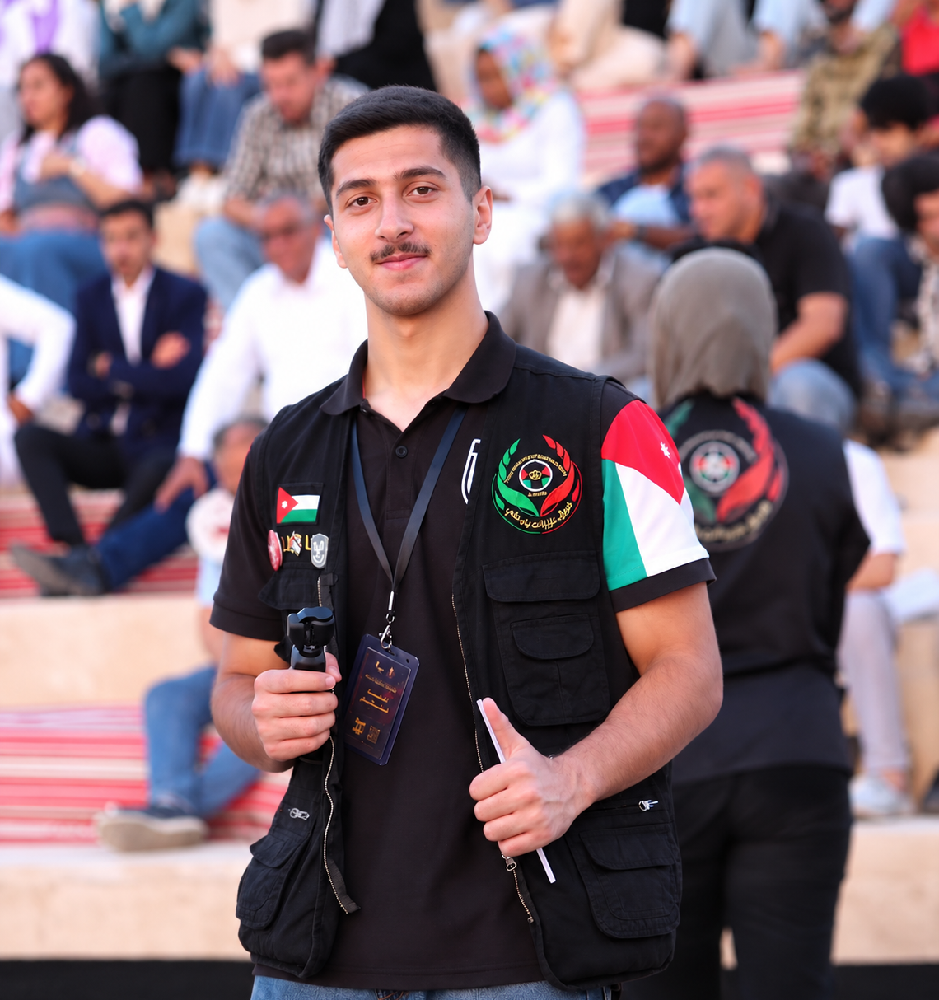
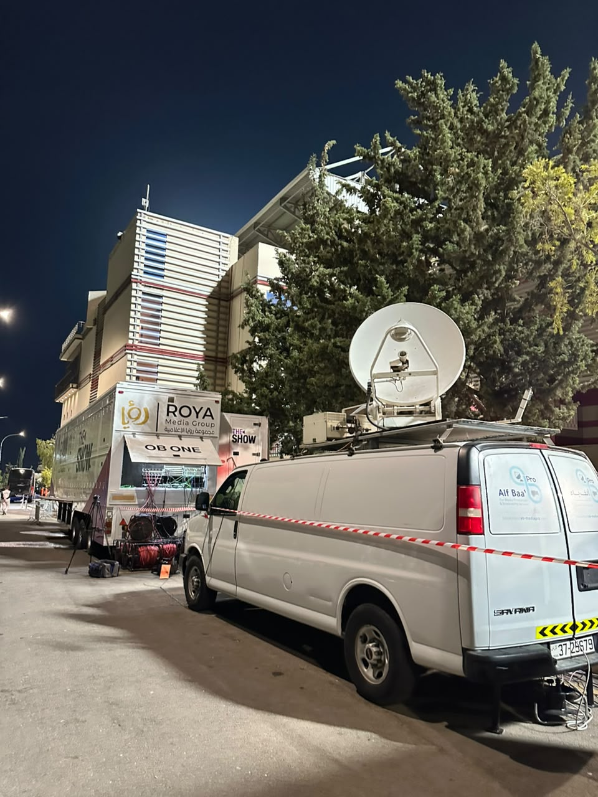
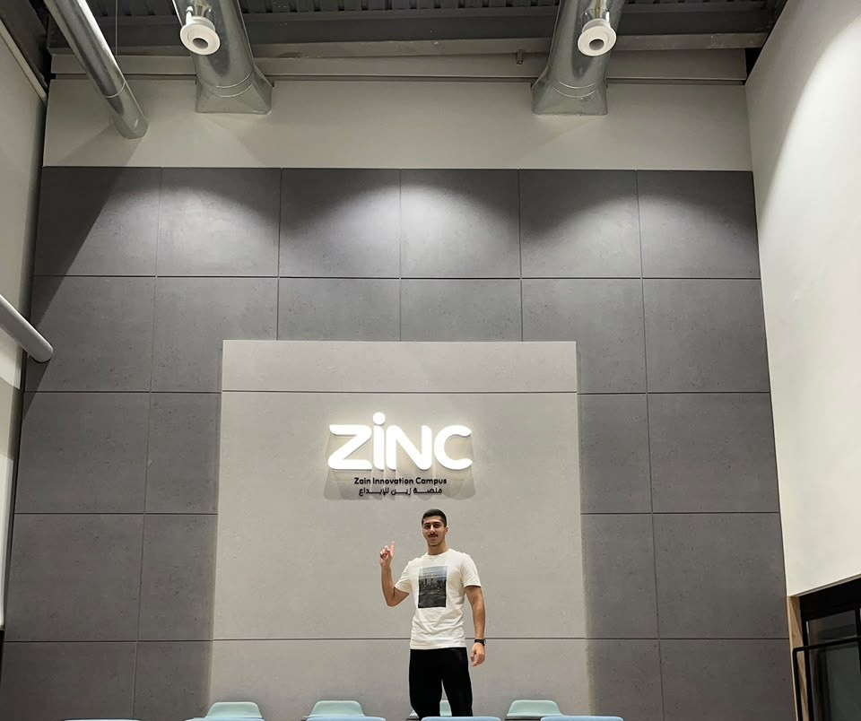
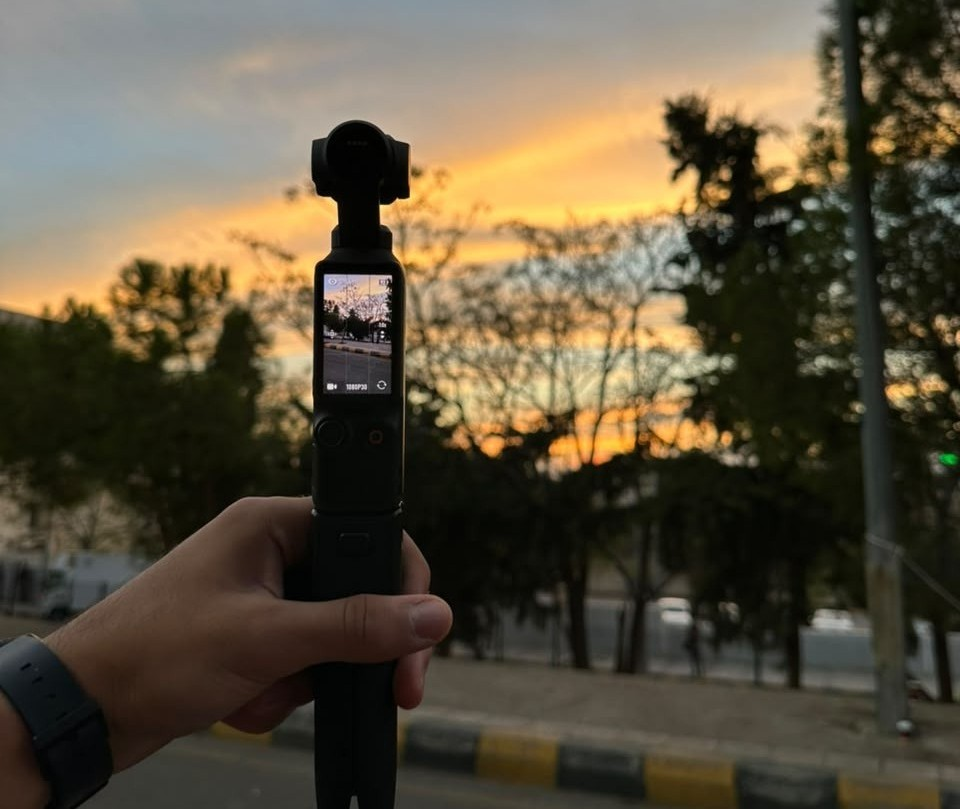

حسن الإدارة والقيادة
القدرة على قيادة الفرق بكفاءة، وتنظيم المهام واتخاذ القرارات المناسبة لتحقيق الأهداف بروح الفريق الواحد.
↗مبدع شغوف بتحويل الأفكار إلى تجارب استثنائية. أجمع بين الإبداع والتفاصيل الدقيقة لأقدم أعمالاً تعكس شخصيتي وطموحي.

زيد سمور, مصور فوتوغرافي معروف ومحبوب بمجتمعه يمتلك شخصية متفانية ويحمل مسؤولية عمله على اكمل وجه ، يحترم قيمة عمله ولا ينقص منه ولا من اداء عمله شيء و شخص يؤمن أن النجاح يبدأ بفكرة، وأن التفاصيل الصغيرة تصنع الفارق الكبير. يحب التعلم والتطور المستمر والعمل على مشاريع تترك بصمة حقيقية.
كل إنجاز عظيم يبدأ بخطوة، وكل خطوة تصنع حكاية نجاح.
بدأ زيد سمور مسيرته المهنية كمُصوّر شغوف، يمتلك رؤية فنية مميزة وزاوية بصرية إبداعية في التقاط اللحظات وتوثيق التفاصيل. ومع مرور الوقت، استطاع تطوير مهاراته وصقل موهبته من خلال التجارب العملية والتحديات التي واجهها، مُحوّلا العقبات إلى فرص للتعلم والنمو، حتى توسع نطاق أعماله وأتيحت له فرص للمشاركة في مشاريع كبيرة ومميزة.
مع تراكم خبراته واكتسابه المعرفة في مجالات التسويق والإدارة من خلال الدورات التدريبية والتجارب العملية، اتجه نحو عالم ريادة الأعمال، ليؤسس شركة «زيتونة ميديا» (Zaytouna Media)، ويتولى منصب المدير التنفيذي لها، جامعا بين شغفه بالإبداع وقدرته على الإدارة والقيادة.
لم تقتصر مسيرته على الجانب المهني والتجاري، بل امتدت إلى العمل التطوعي وخدمة المجتمع، حيث يشغل دورا إداريا في القطاع الإعلامي ضمن فريق «عزيز أنت يا وطني» التطوّعي، إيمانا منه بأهمية مشاركة المعرفة والخبرات وتسخير المهارات لخدمة المبادرات المجتمعية.
العديد من المهارات الاجتماعية والعملية التي احافظ عليها, واسعى في تطويرها دومًا.
القدرة على قيادة الفرق بكفاءة، وتنظيم المهام واتخاذ القرارات المناسبة لتحقيق الأهداف بروح الفريق الواحد.
↗الحرص على التخطيط المسبق والاستعداد الجيد لكل مهمة، مع الاهتمام بأدق التفاصيل لضمان نجاح العمل.
↗امتلاك مهارات التنظيم والتنسيق والإشراف على المشاريع، مع القدرة على مواجهة التحديات وتحقيق النتائج المطلوبة.
↗السعي الدائم لاكتساب المعرفة وتطوير المهارات، وتطبيق الخبرات العملية للوصول إلى مستويات أعلى من التميز والإبداع.
↗مجموعة من المشاريع والأعمال الإبداعية لزيد سمور.
يُعدّ هذا المشروع أول وأكبر مشروع احترافي في مسيرة زيد سمور، حيث تولّى تصوير سلسلة من المحاضرات الوجاهية بالتعاون مع مدرّبة التجارة الإلكترونية القديرة سيرين الشلبي. تضمّن المشروع ثلاث دورات تدريبية بإجمالي 15 جلسة تصوير، أثمرت عن إنتاج محتوى تعليمي متكامل ومتخصص في مجال التجارة الإلكترونية والاستيراد من الصين إلى الأردن. وشكّل هذا المشروع محطةً بارزة في مسيرته المهنية، عكست قدرته على إدارة أعمال التصوير وتنفيذ المشاريع باحترافية وجودة عالية.
يُعدّ هذا المشروع ثاني أكبر المشاريع التصويرية في مسيرة زيد سمور، حيث تعاون مع شركة AB ومجموعة رؤيا الإعلامية لتوثيق كواليس البث المباشر للمباريات. سلّط المشروع الضوء على أدق تفاصيل العمل خلف الكاميرات، من التحضيرات والتجهيزات إلى اللحظات الحاسمة أثناء البث، مُبرزًا روح الفريق والتنسيق العالي والجهود المبذولة لضمان تقديم بث احترافي متقن وخالٍ من الأخطاء. شكّلت هذه التجربة محطةً مهمة في مسيرته، عكست قدرته على توثيق اللحظات الحقيقية وإبراز الاحترافية التي تقف خلف كل بث ناجح.
يُعدّ هذا المشروع ثالث أكبر المشاريع التصويرية في مسيرة زيد سمور، حيث تولّى توثيق مهرجان عشيات طقوس الذي امتد على مدار سبعة أيام متواصلة في مدينة البتراء، وسط مجموعة من المواقع السياحية والأثرية المميزة. استمر التصوير من اليوم الأول وحتى اللحظات الختامية للمهرجان، وشمل توثيق جميع الفعاليات والعروض الفنية وكواليس العمل، مع الحرص على التقاط أدق التفاصيل واللحظات التي عكست جمال المهرجان وأجواءه الاستثنائية. شكّل هذا المشروع تجربة مميزة في مسيرته المهنية، أظهر خلالها قدرته على التصوير الميداني المتواصل، وإدارة الوقت، وتوثيق الأحداث باحترافية، ليحوّل سبعة أيام من العمل والإبداع إلى حكاية بصرية تحفظ أجمل اللحظات.



مشروعك يستحق أكثر من مجرد تصوير… يستحق أن يترك أثرًا.
يسعدني التعاون معك لتحويل أفكارك إلى أعمال بصرية احترافية، من التصوير وصناعة الفيديوهات إلى توثيق الفعاليات، لنُبرز مشروعك بأفضل صورة ونترك أثرًا يستحق المشاهدة.
sammourzaidsaid@gmail.com ↗